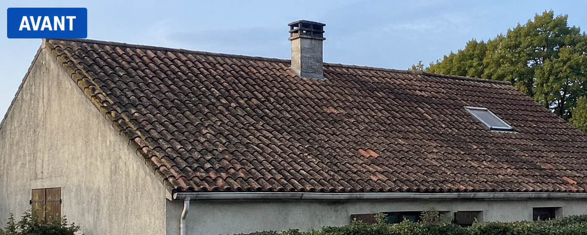

Avant travaux :
• Analyse de l’existant.
• Ancienne couverture vieillissante.
• État du support.
• Contraintes techniques.
• Préparation du chantier.
• Structure à reprendre.
• Isolation à optimiser.
Pendant le chantier :
🔨 Préparation et sécurisation.
🔨 Reprise de charpente.
🔨 Contrôle de l’alignement et des finitions.
🔨 Pose soignée des matériaux.